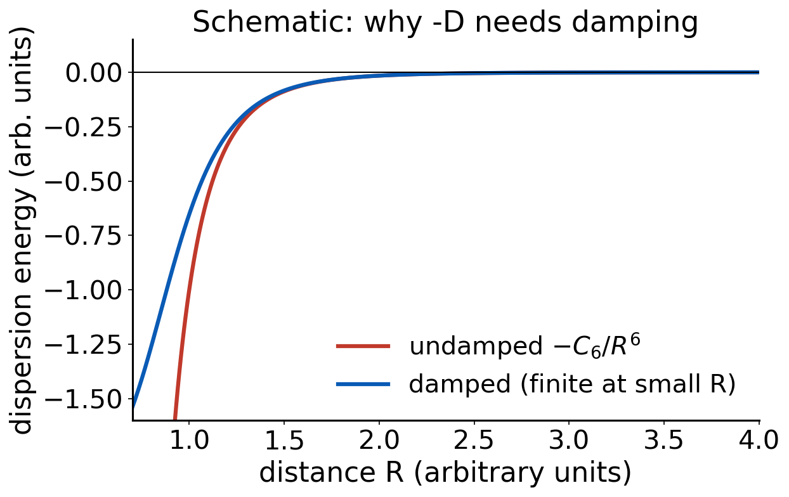
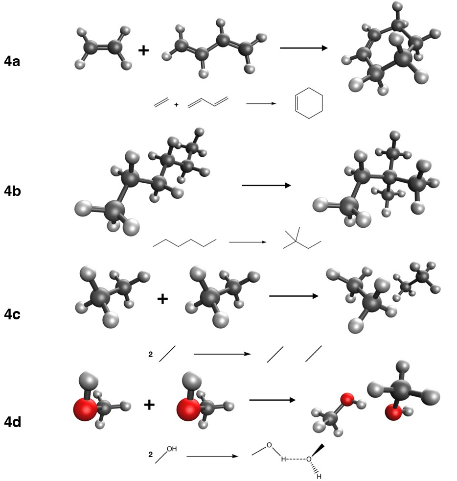

Lecture 8 · Debrief Exp. 3 · Dispersion and noncovalent interactions
Why functionals miss London forces, how -D4 and VV10 add them, and a look at Experiment 4
Advanced Physical Chemistry · Florida Institute of Technology
Debrief: Experiment 3
Your results
[Live: open Class results → Experiment 3 heatmap]
- Signed errors for 16 methods on four “easy” reactions
- Which cells are dark? Which rows are almost all light?
[Insert class plot: error by method and reaction]
[Insert class plot: Experiment 3 signed-error chart, 16 methods × reactions 3a–3d]
What you probably saw: easy means forgiving
- Most methods do well on the rotation and conformer energies
- Reason: error cancellation. Both sides of each reaction have the same bonds
- Typical outliers: the local density approximation (SPW92) and Hartree–Fock
- The ranking by rung is not strict: a good GGA can beat a poor hybrid here
Butane-1,4-diol: an intramolecular hydrogen bond
- Conformers differ in how the two OH groups interact
- A hydrogen bond mixes electrostatics, charge transfer and dispersion
- Methods that treat noncovalent contacts poorly show up here
- Keep this in mind: 3c is the first hint of what Experiment 4 pushes harder
[Insert class plot: cost versus accuracy]
[Insert class plot: time per SCF cycle vs. mean absolute error, one point per method]
Cost: what you probably saw
- (Meta-)GGAs are cheapest per SCF cycle among DFT methods
- Hybrids cost more because of exact exchange
- Range-separated hybrids and VV10-containing methods add more
- B3LYP is not special in cost compared with other hybrids
- The most expensive method is not automatically the most accurate
Cost and accuracy are different axes. Pick on evidence, not on habit.
Dispersion
What is dispersion?
- Electrons in two atoms fluctuate: instantaneous dipoles appear
- A dipole on A induces a dipole on B, and they attract
- This correlated motion lowers the energy at long range (London 1930)
- Present between all atoms and molecules, even noble gases
The long-range form
\[ E_{\text{disp}}(R) \;\approx\; -\frac{C_6}{R^6} \]
- C₆ grows with polarizability of the two partners
- Weak per contact, but it adds up over many atom pairs
- Dominant for noncovalent complexes, important in large molecules
Why semilocal functionals miss it
- LDA, GGA and meta-GGA energy density at a point depends only on the local density (and gradient, τ)
- Two distant, non-overlapping densities do not “see” each other
- No correlated fluctuation between them: no −C₆/R⁶ tail
Why HF misses it
- HF has no electron correlation at all
- Dispersion is a correlation effect
- No amount of basis set or integration grid brings it back
- That is why (HCl)₂ was not fixed by a bigger basis in Experiment 1
Fix 1: add it by hand (-D)
- Add a pairwise sum over atoms: E_disp = −Σ C₆,ᵢⱼ / R⁶ᵢⱼ × damping
- History: D2 used fixed C₆ values; D3 made C₆ depend on coordination
- -D4 (this course): C₆ also depends on atomic charges [Caldeweyher 2017, 2019]
- The damping parameters are fitted per functional, so -D4 only works with the functional it was parameterized for
Damping

- Undamped −C₆/R⁶ diverges at short range
- Damping turns the correction off where the functional already describes overlap
- Different damping schemes exist (zero, Becke–Johnson)
Fix 2: build it into the functional
- Nonlocal VV10 kernel: a double integral over the density at two points [Vydrov and Van Voorhis 2010]
- Names: B97M-V, ωB97M-V, B97M-rV (the “-V” and “-rV” tell you)
- No atom-pair parameters: the kernel works from the density
- Cost: extra integration over pairs of grid points
Fix 3: let the fitting do it
- Minnesota functionals (M06-2X, M11, MN15) have no explicit dispersion term
- Their flexible forms were fitted to data that include noncovalent complexes
- Can work well inside the training domain
- Less transferable than a physical long-range tail
Summary of three routes
| Route | Example | Notes |
|---|---|---|
| Add a pairwise term | PBE-D4, B3LYP-D4 | cheap; functional-specific damping |
| Nonlocal kernel | ωB97M-V, B97M-V | density-based; extra cost |
| Fitted | M06-2X, MN15 | no explicit tail |
Quick question
Hexane has a linear chain, neohexane is branched (more compact).
Which should be more stable, and what holds it up?
Neohexane. Branching brings more atoms into close contact, so there is more intramolecular dispersion. Semilocal functionals without a correction tend to miss this.
Intramolecular dispersion
- It is not only for dimers: a large molecule folds against itself
- Isomerization energies, conformers and reaction energies of big molecules can all shift by several kcal/mol
- Experiment 4 includes hexane → neohexane for this reason
Dispersion is a long-range correlation effect. Semilocal DFT and HF miss it; -D4, VV10 and fitting restore it in different ways.
Experiment 4 briefing
Goal
Experiment 4: Applying DFT to Organic Chemistry, Part B
- When does error cancellation stop helping?
- What do -D4 and VV10 actually fix?
- Same 16 methods as Experiment 3, def2-TZVP
The four reactions
| Reaction | Ref. (kcal/mol) |
|---|---|
| 4a ethene + butadiene → cyclohexene | −45.4 |
| 4b n-hexane → neohexane | −2.49 |
| 4c 2 ethane → (ethane)₂ | −1.34 |
| 4d MeOH(A) + MeOH(B) → (MeOH)₂ | −5.81 |

What each reaction tests
- 4a Diels–Alder: π bonds become σ bonds. Bond types change
- 4b: intramolecular dispersion
- 4c: pure dispersion
- 4d: hydrogen bond with a dispersion contribution
Jobs and setup
- 10 molecules × 16 methods = 160 jobs with def2-TZVP
- Dimers: each monomer and the dimer are separate jobs (ethane monomer, ethane dimer, two methanol monomers, methanol dimer)
- Check the species list carefully: 4c uses coefficient −2 for ethane
Pitfalls
- Dimers and BSSE: the dimer borrows basis functions from its partner, so binding looks too strong in small bases. We use a triple-ζ set, but keep it in mind
- Do not apply -D4 twice: use the -D4 methods as listed, not extra keywords
- Large total energies, small differences: keep every digit
Expectations to lock
Before running, write down:
- Will -D4 matter more for 4a, 4b, 4c or 4d?
- Which treatment of dispersion will do best on 4c: none, -D4, VV10 or fitted?
- Will the same treatment win on 4d?
References
- London, F. Z. Phys. 63 (1930): dispersion force.
- Grimme, S. et al. J. Chem. Phys. 132 (2010): D3.
- Caldeweyher, E. et al. J. Chem. Phys. 147 (2017); J. Chem. Phys. 150 (2019): D4.
- Vydrov, O. A.; Van Voorhis, T. J. Chem. Phys. 133 (2010): VV10.

CHM 5111 · Advanced Physical Chemistry · Florida Institute of Technology